Light · as built, grey #767676
Global treasury overview
Consolidated position · 28 August 2026 · GBP equivalent
#767676 on #FFFFFF · 4.54:1
Session 312 · review page · The pictures you are owed
Most need one click. Where a picture would not help, the call is plain words. Take the recommendations in the table below, or change any of them.
At a glance · every call and its recommendation
One row per call, in page order. The answer column fills as you click. Each row jumps to its picture.
| # | The call | Recommended | Your answer |
|---|
01 · Container types · your call
"So extending this do we need a series of container types like section, division, sector, panel, etc"Your page note, Tuesday 29 September, 18:56
Section and panel drawn on the banking demo. Orange is a section, blue is a housing (the tile, with its cell written as columns by rows), the dashed line is the frame. Today the demo marks every tile as a named section: three of its four named sections are tiles, and the three bento groups are plain unnamed boxes. The recommendation turns that round. The page header and each bento group become the sections, and tiles stop being landmarks.
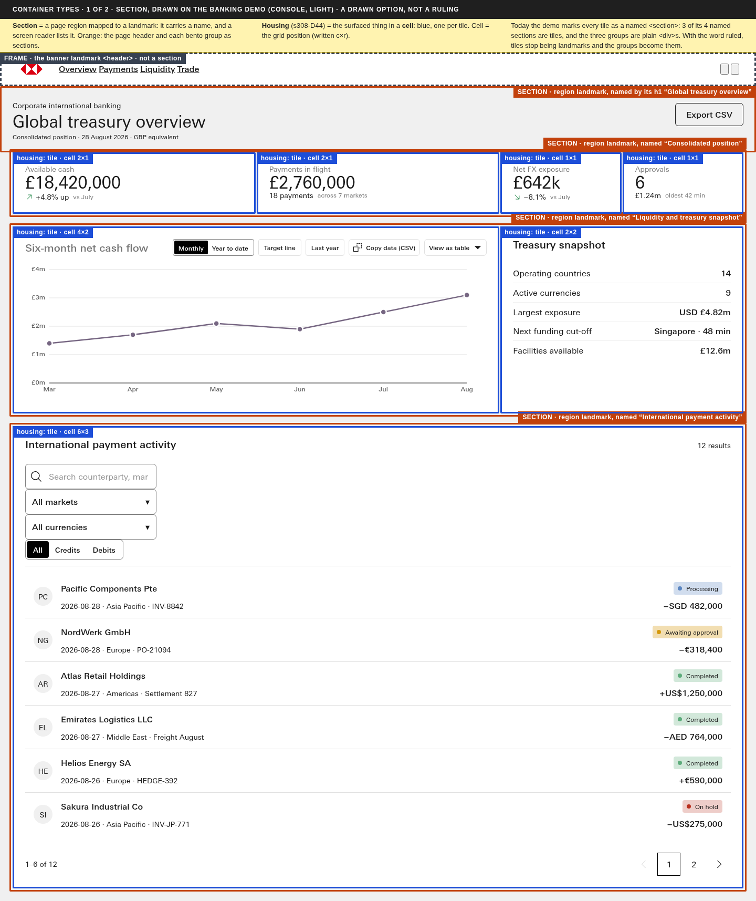
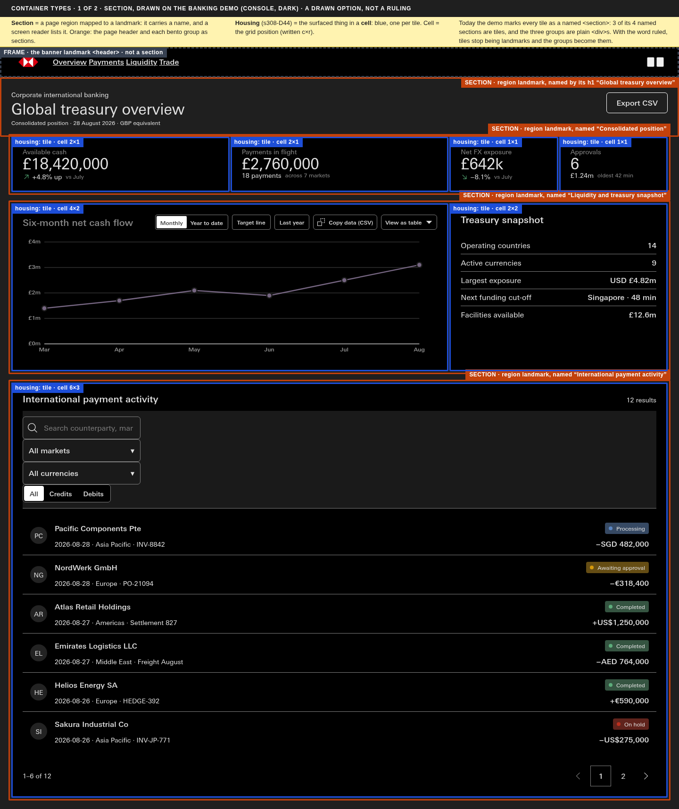
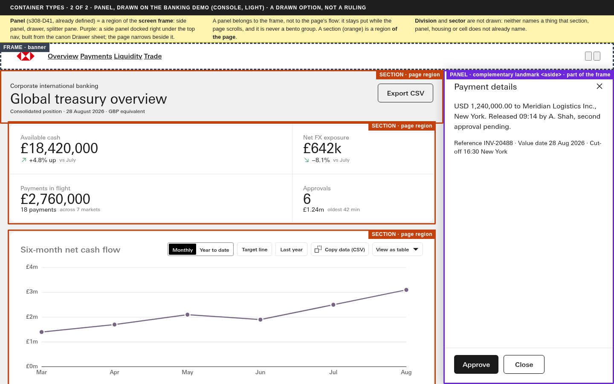
Which container words stand?
Recommended: section and panel; drop division and sector.
notes/_lanes/312/F/F3/render_F3.py against canon at d3be2c22, from git show copies in /dev/shm. Facts in notes/_lanes/312/F/F3/img/F3-facts.json: the demo has 8 <section>s, 4 named (region landmarks), 3 of those 4 are tiles; the 3 bento groups are div[aria-label].W-308iw (the three naming words; housing and cell were ruled at s308-D44).<a>s in nav.main; canon's nav styles target .nv-item) and its action buttons are empty boxes. dashboards/international-banking-dashboard.canon.html.03–07 · The top-nav shell as an information-architecture question · five calls
"Not quite, this is an IA question and the preference in general is a top nav, if there are multiple levels we use a mega menu. Again we need to explore this rule more rigorously"Sunday 28 September
"typically we use mega-menus for multi level navs, we engineer the IA so that it the top level doesn't have a lot of items"14 September
The banking demo carries four destinations. A real corporate banking portal carries about nine, most with a second and third level: Overview, Accounts, Payments, Receivables, Liquidity, Trade, FX, Reports, Admin; Payments alone has ten pages in three groups. Today's rule (up to seven destinations and two levels, else the side nav) hands that portal to the side nav. Every option below is drawn against it, on the real demo with a wireframe masthead.


Does the top nav become the default frame for an app, whatever the count of destinations or levels, with the mega menu for multiple levels?
Recommended: yes, as drawn.
Is six links in one column the line between a flyout and a mega menu? Links grouped under headings are always the mega menu.
Recommended: yes. Six is the column ceiling you ratified in September.
Where does the third level live?
Recommended: tabs in the page-header lock-up (the foot drawn in call 9), never a third band of chrome.
Does the side nav survive for the workbench case only, chosen by the job, never by a count?
Recommended: yes.
In Console dark the mega menu is black (#000000) over black tiles, on a #1F1F1F ground under a scrim. Its only edge is a shadow at 85% black, and a black shadow does not read on black. The token set already holds the answer: the elevation border, transparent in light and a #808080 line in dark. Nothing floating uses it yet.
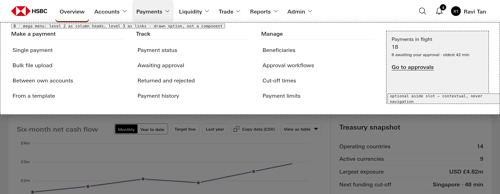
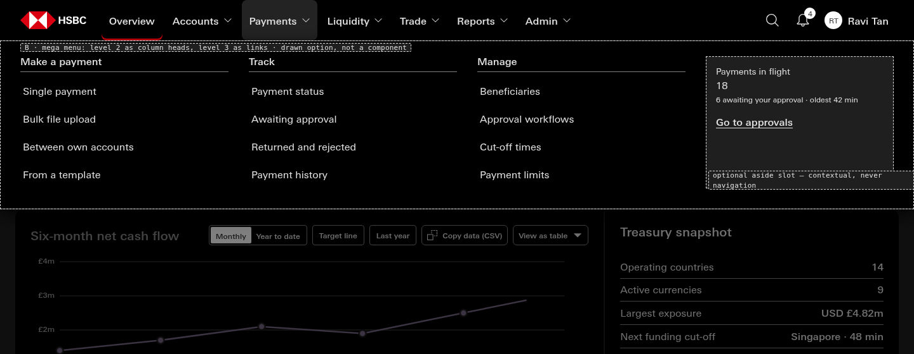
Does every surface that floats over the page (the mega menu, the account menu, dropdowns) carry the elevation border: invisible in light, a grey line in dark?
Recommended: yes. The token exists for exactly this edge.
notes/_lanes/312/F/F1-topnav-ia.html (d4e6a1a9), rendered from git show d1901fa2 copies by notes/_lanes/312/F/render_F1.py; facts notes/_lanes/312/F/img/F1-facts.json. The demo's own masthead is hidden and a wireframe masthead injected; header and bento below are real. Wireframe type is Helvetica 14px with 12px item padding, narrower than the canon nav link, so its 812px row reads low. Chrome before the page title: options 1 and 2, 65px; option 3, 170px; foil, 64px plus a 248px column.primaryNavigation = present AND platform = app — the default frame for an application whatever the count; primaries in one 64px row (stacked form only when they do not fit the row at the product's floor width); a destination with children opens a flyout (up to 6 links, one column) or, over 6 or grouped, the mega menu (up to 4 columns, level 2 the heading, level 3 the link, a column never over 6; s272-D70); peer views are tabs in the lock-up. Yields to focused, multi-column, split and doormat; side nav and rail by the workbench test.knowledge/roles.json app-shell-side-nav when ("> 7 destinations or two nav levels") becomes the workbench test; when-fields.json has no name for "links under one destination" (prose inside the gate until one is added by the s273-D4 route); Navigations.reference.html has no flyout or mega-menu markup at all, so the mega menu is a build owed. Row this closes: W-305e2.notes/_lanes/312/F/F1/, rendered against 148fa6fc by render_f1.py, not committed; notes/_lanes/312/WAVE-2-START.md § 6 names d4e6a1a9 as F1's record). The token was re-checked today: --elevation-border in knowledge/canon/canon.css is #FFFFFF00 (light), #808080 (dark), #524842 (one Supercharge scope). That run also measured a fit test in place of the count: at 1024 five destinations fit with 131px spare and seven overflow by 36px; at 1440 nine fit with 215px spare and twelve overflow by 37px (F1/img/E-fit-*.png).08 · The list rule, worked on its own · your call
"we need to revisit this rule, lists can be filtered and resorted, and the general preference is for lists in most cases, lets work on this rule on it's own."The loose-ends page, 28 September
The banking demo already works the way you said. Its payment activity tile is a list under a toolbar: a search box, a market filter, a currency filter, a credits-or-debits switch, a chip for each filter you set, and pages. Twelve payments, six to a page; filtered to Europe it shows four. The sentence you rejected would have made that tile a data grid. Below, the same twelve payments in the three shapes, drawn on canon as it stands.
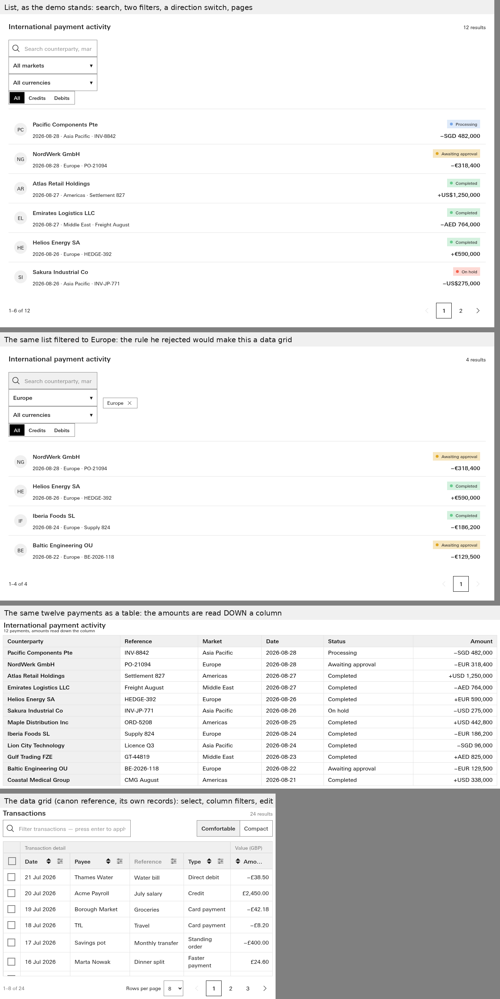
Which wording stands?
Recommended: option 1, the toolbar does not change the shape.
e75c8c1e), rendered read-only against canon at 148fa6fc by notes/_lanes/312/F/F2/render_F2.py list; facts notes/_lanes/312/F/F2/img/facts-all.json; dark version 01-three-shapes-dark.png.#transactions, 1392px at 1440): 12 results and 6 rows; filtered to Europe, 4 and 4. The table is .cn-table from the demo's DATA array; the grid is knowledge/snippets/Data-grid.reference.html cropped, its own 24 records.knowledge/components/list-items.meta.json when, knowledge/roles.json record-list providers, notes/_lanes/304/R4a/drafts/when-rules.proposed.json. Row this closes: W-305e1.09 · The page-header lock-up · your call
"we have to work on this lock-up though"The loose-ends page, 28 September
The lock-up is built as three separate arrangements: simple, breadcrumb with tabs, and a badge count with a meta line. Below is the demo's own header drawn three ways in light and dark, using only the lock-up's own classes; the second uses the tab strip you accepted on Wednesday, the one that takes its ground's colour.
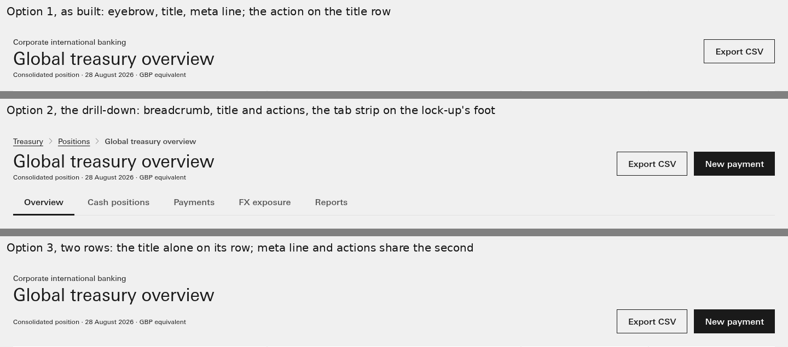
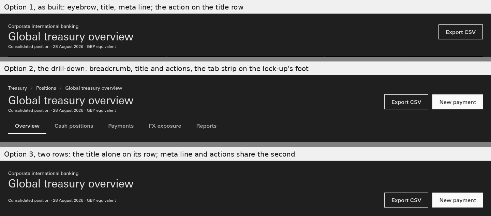
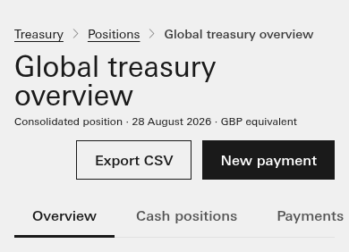
Which shape stands?
Recommended: option 2, a foot for the tab strip; the badge-count arrangement goes.
notes/_lanes/312/F/F2/render_F2.py header at 148fa6fc. Options 2 and 3 are demo copies with the header swapped for markup from .cn-page-header-lockup's own classes; option 3's second row carries one inline align-items:center. Heights at 1440: 126, 198, 162px; at 390: 210 and 282px. "New payment" and the tab names are stand-ins.knowledge/components/page-header-lockup.meta.json (arrangement enum and variants), knowledge/snippets/Page-header-lockup.reference.html (arrangement C). Row this closes: W-305e3.10–11 · A header for bento groups · two calls
"one thing to note, I want to add a header component to bento groups."The loose-ends page, 28 September
Drawn on the canon dashboard template, Mono light, three ways. A puts the header on the wall above the tiles. B puts the same lock-up inside the group as a band on the tile surface: it reads as one more tile and costs a row. C is your second question, below. The drawing shows a fault worth a rule: on Position, the group header says View all and the Needs attention tile inside it says View all too, a few pixels apart.
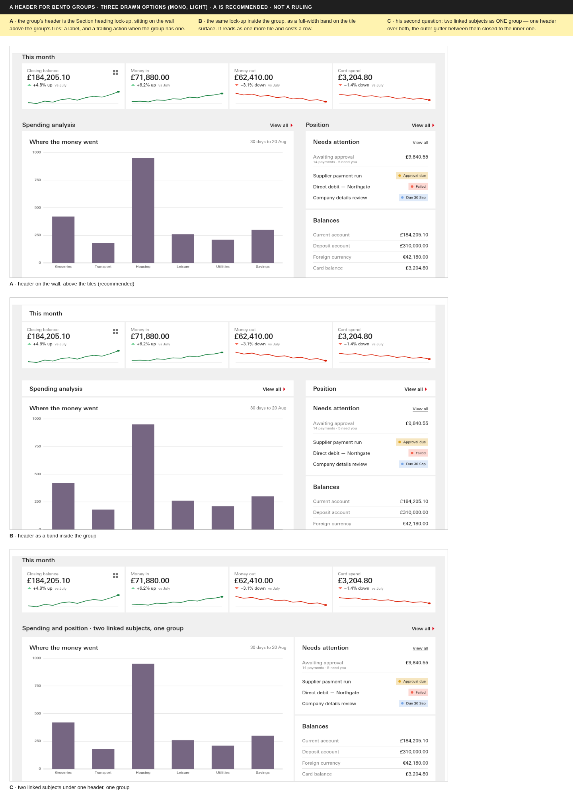
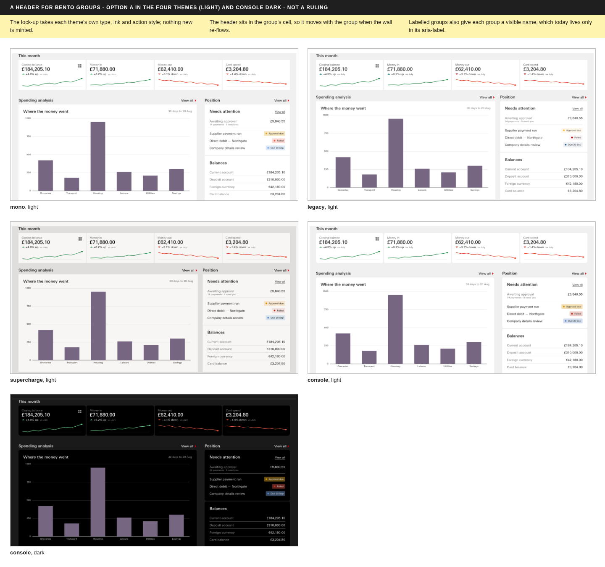
Where does the group header sit?
Recommended: A, on the wall above the tiles, with the rule that a group's action and a tile's action never repeat.
"I wonder if this is a valid variation if two subjects are intimately linked. This is a UX qustion."The loose-ends page, 28 September
Drawn as C: Spending and Position under one header, the outer gutter between them closed to the inner one so they read as one block. The test that makes it valid: one header can name both honestly, and one action serves both. Exposure and resilience, where limit utilisation belongs to both, pass that test. Spending and Position as drawn are a stretch; they are there only to show the shape.
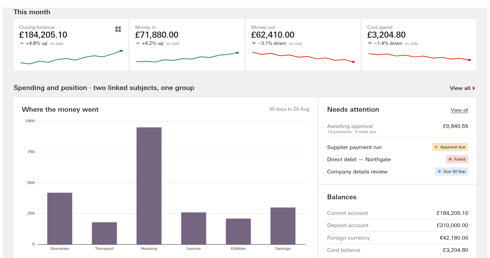
May two closely linked subjects share one group?
Recommended: yes, as a variation and not the default, when one header names both honestly and one action serves both. Otherwise they stay two groups.
notes/_lanes/312/F/F4/render_F4.py <sha> header at f8eedc96 on the canon-scoped dashboard template. The header is the canon Section heading lock-up: arrangement A (label only) for "This month", B (with the arrow link) for the others. Per-theme files F4-6-groupheader-<opt>-<theme>-<mode>.png.W-305e4 (the header) and W-305e5 (linked subjects).12–13 · The ring's size bands · two calls
"The chart pattern should be set to fill but its container should constrain it by being smaller of having more than one element in it"The loose-ends page, 28 September
Top row: today, a fixed 200px ring in every tile. At 320, 440 and 560 wide the legend cannot sit beside it (it needs 518px), and at 720 the tile has 154px empty beside it. Bottom row: your sketch. The ring grows with its tile and stops at the band. The lower band is not a taste number: it is the smallest ring whose hole holds the centre figure. The sizes come out the same in all four themes, light and dark.
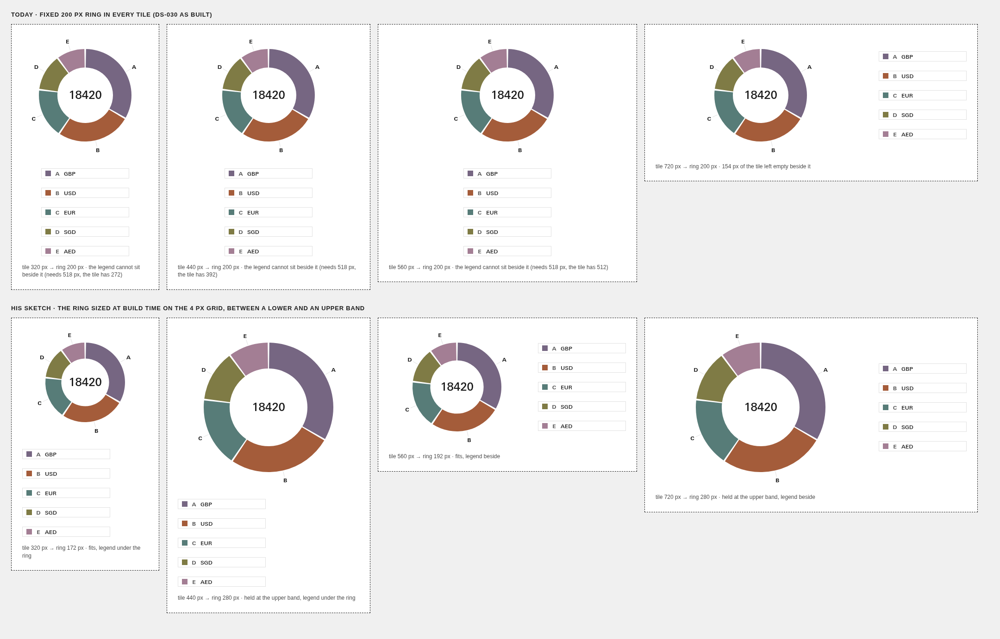
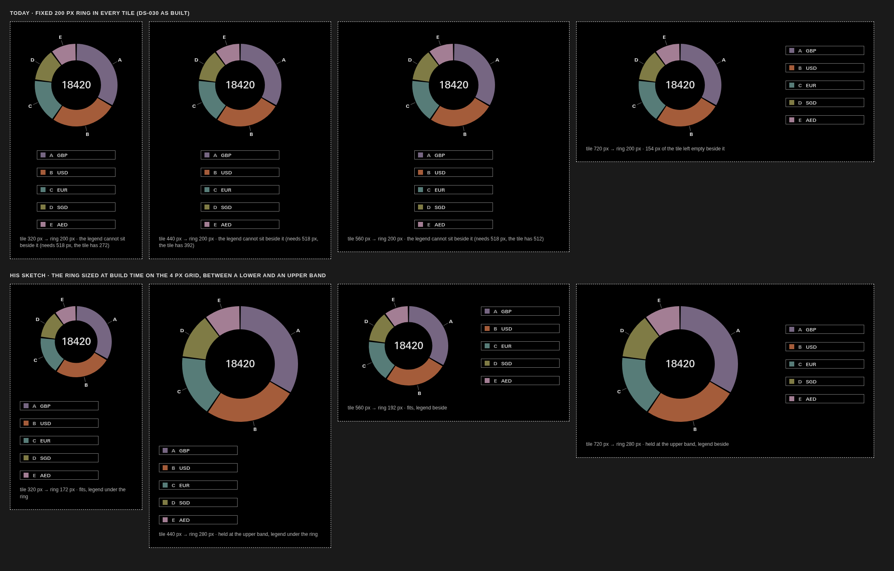
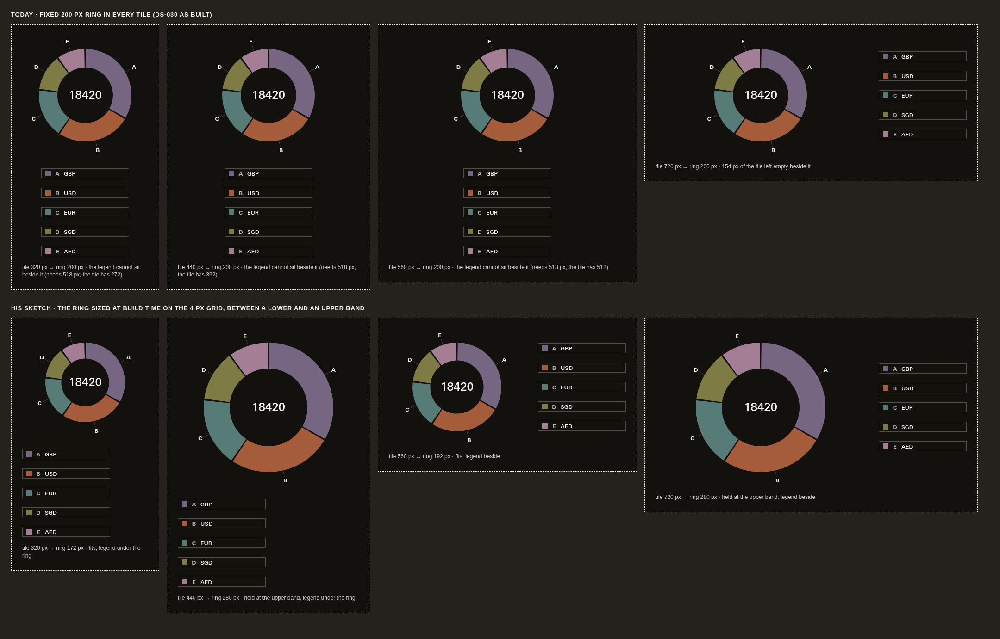
Where is the upper band?
Recommended: 280px, as drawn. The lower band, 148px, is measured, not chosen.
Look at the second and third tiles in the bottom row. At 440 wide the legend cannot sit beside, so it drops underneath and the ring grows to the 280 upper band. At 560 the legend fits beside and the ring drops to 192. A narrower tile gets a bigger ring. The sketch needs a rule for the stacked case. Two ways out: a cap, where a stacked ring is never bigger than the ring one step wider with its legend beside (at 440, that is 192); or a separate, lower band for the stacked case, a number you name.
When the legend drops under the ring, how big may the ring be?
Recommended: the cap. A stacked ring is never bigger than it would be one step wider with the legend beside, so rings only grow as tiles grow.
notes/_lanes/312/F/F4/render_F4.py <sha> donut at f8eedc96: real dv-render and dv-render-donut on canon, tiles 320/440/560/720. Rings 172 (stacked), 280 (stacked), 192 (beside), 280 (beside), identical in all 8 theme and mode runs (F4-facts.json). Four-theme sheets: notes/_lanes/312/F/F4/img/F4-3-donut-bands-4themes-light.png and -dark.png.notes/_subreports/2026-10-01-312-F-renders.md.W-305n2; the donut meta's "does not stretch" (s305-D59) is what this replaces.14–15 · The bento ground word · two calls
The bento editor offers four grounds: grey, white, dark grey and transparent. None of them is bound to the section ground the dashboard template paints, so the editor cannot record what canon draws; the nearest word is grey. In light, grey and section are the same colour in all four themes. In dark they part by one step, and the section ground equals the dark page, so the wall meets the page with no edge while the tiles keep theirs. Left: grey, what the editor can record today. Right: section, what canon paints.
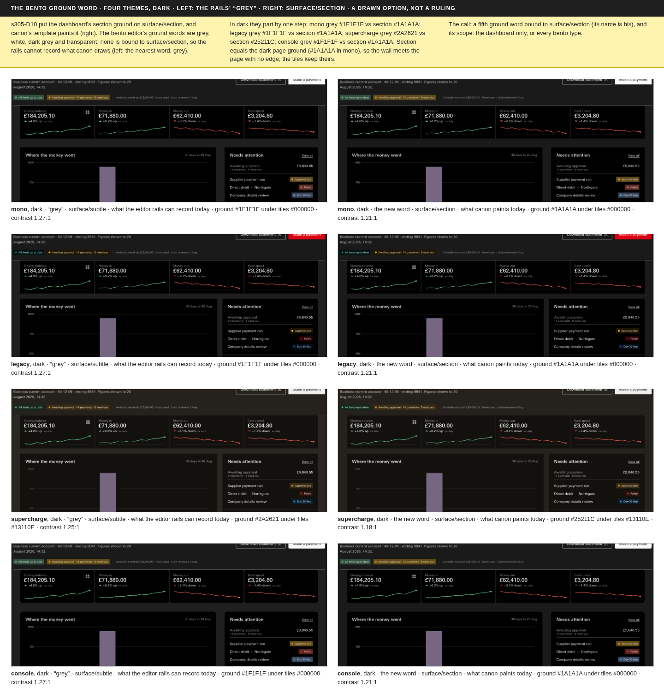
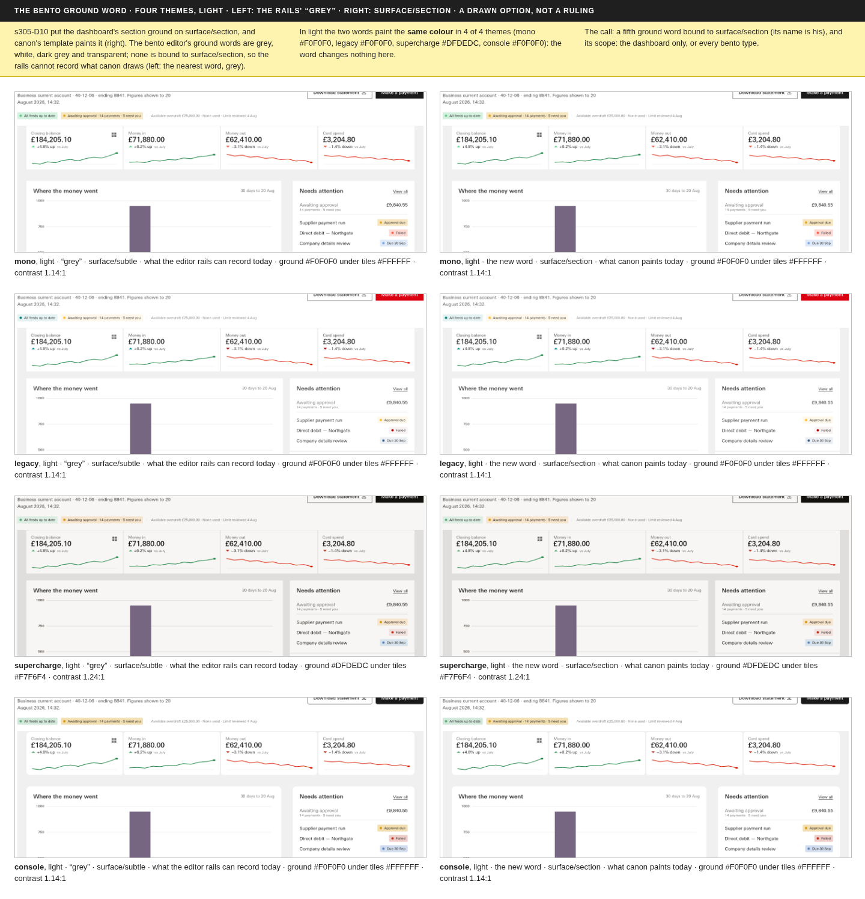
Does the editor get a fifth ground word, and what is it called?
Recommended: yes, called "section", the same word as the token under it.
Does the section ground belong to the dashboard only, or to every bento wall?
Recommended: every bento wall. A wall is the same wall whichever page it sits on; one ground, one word.
notes/_lanes/312/F/F4/render_F4.py <sha> rails at f8eedc96; 16 per-shot files F4-7-rails-<theme>-<mode>-<grey|section>.png. Contrast of ground under tiles, dark: grey 1.27:1, section 1.21:1 (Supercharge 1.25:1 and 1.18:1).theme_tokens() picks the wrong Supercharge block (drift since #288), and no rails word binds surface/section. The "grey is the tile colour" note came through that resolver's first-match bug (found 2 of notes/_subreports/2026-10-01-312-F-renders.md).W-305w2 (its rails half).16 · The status roundels in dark · your call
In dark, twenty rules across eighteen parts and templates paint the status roundel (the round mark in a notification, an inline message and a field error) pure white, by a policy from July: white shape, black mark. On Wednesday you softened the icons to the ink, so the roundel is now the one pure-white thing on those notes. Left in each theme: as built. Right: following the ink. The status still rides the shape and the tinted ground; only the white softens.
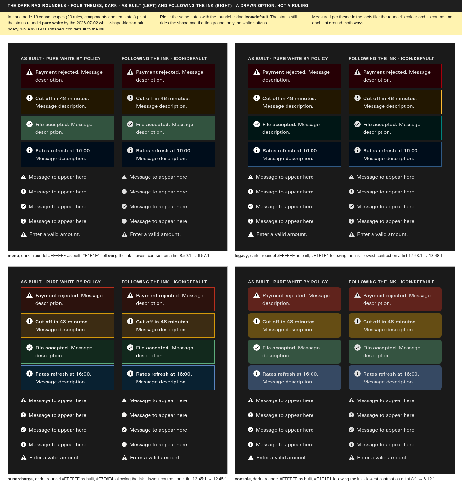
In dark, does the roundel follow the ink?
Recommended: follow the ink, stated as a change to the July rule.
notes/_lanes/312/F/F4/render_F4.py <sha> roundel at f8eedc96; per theme F4-9-roundels-<theme>-dark.png; the following-the-ink side takes icon/default..ic{color:#FFFFFF} dark rules in 18 canon scopes, not the nine lane B counted: they include four templates (auth, create-edit, settings, wizard), tags-input, textarea and time-picker (F4-facts.json roundel_white_rules). The policy is the 2026-07-02 white-shape-black-mark rule; the softened ink is s311-D1.notes/_subreports/2026-09-30-311-B-icons-and-supercharge-page.md.17–18 · Two token names · two calls
No new picture is needed: each token is already on this page. The section ground is the right-hand column of the pictures in call 14. The notification border is the thin coloured edge on the Legacy and Supercharge notes in call 16, absent on Mono and Console.
surface/section: accept or rename?
Recommended: accept.
notification/contextual/border/alpha: accept or rename?
Recommended: accept.
notes/_subreports/2026-09-27-305-B1-look.md). surface/section: light color/neutral/13, dark color/neutral/4; ADR-0014 resolves Supercharge light #DFDEDC, dark now #25211C after s311-D2. notification/contextual/border/alpha: a number token in semantic-colour.json, base 0, legacy and supercharge overrides 1; the unitless rule in all three generators keys on a last segment alpha.W-305b1; carried in _CARRIES.md as a residual since #305.19–20 · The 29 colour forks · two calls
The rest are a legacy palette pasted into Mono (twelve), the check reading a sanctioned variant or a shared nickname as a fork (nine), the disabled grey already owed (four), and one chart gap. Two wait on the third red. Your caveat, that some were chosen for halation and contrast, holds on exactly one family: the notification bar kept dark fills because white fails on the Mono pastels; the ruled answer there is dark ink on the pastel. The full table, with a pick and a reason on every row: notes/_lanes/312/B/forks-29-table.html.
Mono's hero sub-line is grey. Everywhere else in Mono, secondary text is the ink. No ruling mints a text grey for Mono. The case for the grey is halation: in dark it cuts the glow about five times. The case against: you already softened the dark ink to #E1E1E1 for that reason. Drawn in this page from the hex values, not a canon render.
Light · as built, grey #767676
Global treasury overview
Consolidated position · 28 August 2026 · GBP equivalent
#767676 on #FFFFFF · 4.54:1
Light · the ink #1A1A1A
Global treasury overview
Consolidated position · 28 August 2026 · GBP equivalent
#1A1A1A on #FFFFFF · 17.4:1
Dark · as built, grey #9A9A9A
Global treasury overview
Consolidated position · 28 August 2026 · GBP equivalent
#9A9A9A on #1A1A1A · 6.19:1
Dark · the ink #E1E1E1
Global treasury overview
Consolidated position · 28 August 2026 · GBP equivalent
#E1E1E1 on #1A1A1A · 13.31:1
In Mono, does the hero's sub-line keep a grey, or take the ink?
Recommended: the ink, like every other secondary text in Mono. No Mono text grey is minted.
The tertiary (outline) button's border token is pure black in Supercharge and Mono. Only Supercharge's button paints its theme's darkest colour instead. Your ink rule stops short of borders today. The contrast model cannot tell the two apart (19.4:1 and 17.5:1 on Supercharge's ground); only your eye can. Drawn in this page from the hex values.
Supercharge · pure black
Downloadborder #000000
Supercharge · the ink
Downloadborder #13110E
Mono · pure black
Downloadborder #000000
Mono · the ink
Downloadborder #1A1A1A
Does the outline border follow the ink, so a button's border and label are one colour?
Recommended: yes. One rule with no exception for borders; Supercharge's button already does it.
notes/_subreports/2026-10-01-311-B5-forks-29.md; table notes/_lanes/312/B/forks-29.json and forks-29-table.html; scorer forks_29.py. Rows 9 and 10 (--muted mono, root v .cn-hero) and 29 (--ter-border supercharge, action-bar #000000 v button #13110E; tertiary/border/default pure black at canon.css:387 and :26864). Bloom, dark: #9A9A9A 2.9 v #E1E1E1 16.2.notes/_subreports/2026-10-01-311-B5-forks.md, uncommitted) made different picks; WAVE-2-START.md § 6 leaves the choice of record to the conductor. This page follows forks-29. Row: W-308ib.21–22 · Two words from last night's schema build · two calls
Your four schema rulings from 27 and 28 September are now in the parts' records. Two words in that build were left for you. No picture: both are names in the record, not things on screen.
Keep "terms", or name them?
Recommended: keep "terms".
Widen or narrow the four kinds of tile the wall accepts?
Recommended: keep the four; widen only when a real page needs a fifth.
notes/_subreports/2026-10-01-311-C0-schema-calls.md: s305-D17, D18, D19, D58 built at 7eaae613. D58 said the data grid's applied search terms need a name of their own; C0 used terms. The bento tiles slot accepts four roles: headline metric, status surface, chart, record list.23–29 · Housekeeping that waits on your word · seven calls
They came out of the quick-fixes lane on 28 September and one overnight lane. Each changes something visible or changes a rule, which is why they are yours.
23 · The Tabs width
The Tabs part is 640px wide wherever it goes (in a 1200px space: strip 640px, panel 424px). Should its real default fill the space it is put in?
Recommended: fill the container. The 640px was a demo setting that never left; your September rule says such a setting is moved to a real default, not fenced off. The panel's text keeps its reading width.
24 · Square corners
The split button has two square corners where its halves meet. The corner check refuses a plain 0 on purpose, because corners are token-bound, and no zero token exists. A token, or allow a plain 0?
Recommended: mint a square-corner token (its name is yours). It keeps the check's teeth; allowing 0 blunts it.
25 · The September evidence image
A question asked to apply "the image size rule" to a 4.36 MB evidence folder from 3 September (largest file a 1.33 MB full-page screenshot). No such rule was ever made. What happens?
Recommended: leave it as filed and close the question. There is no rule to apply, and filed evidence is frozen.
26 · The showroom focus ring
137 showroom pages hard-code a blue focus ring (#305A85). Should it be the library's own focus token? Their dark-mode look changes.
Recommended: yes, so the showroom shows the focus the library ships.
27 · The old canon gallery
The old canon gallery page is well out of date, and regenerating it changes it. Keep and regenerate, or retire?
Recommended: keep and regenerate. It is still one of the pages a colour change is measured against (the 27 September build proved nothing else moved by zero changes on it in four themes, light and dark), and the screen gate holds a record for it. Its two sizing rules from last night follow this answer.
28 · The runbook index date
Every build rewrites "last generated" with today's date on the runbook index, so the file changes when nothing in it did. Keep it, or show the date of the newest runbook change?
Recommended: show the date of the newest runbook change.
29 · Fallback colours
Generated pages write a fallback colour inside each colour variable, used only if the stylesheet fails to load. Twelve have drifted from canon, and each has three right answers by theme and mode. Which theme do the fallbacks follow?
Recommended: the base theme in light, the values the other themes override. One answer for every page, and the drift check can then be made to refuse.
notes/_subreports/2026-09-28-307-D-quick-18.md, in its order; call 27 is also overnight lane A1's question (notes/_subreports/2026-10-01-311-A1-shared-stylesheet-link-dont-paste.md: canon-gallery's 2 legacy sizing pins wait on it). The recommendations on these seven are this page's, not lane D's; lane D gave none.W-307ye: --tabs-w:640px and max-width:52ch in canon at canon.css:3026 and :3069, unfenced; render notes/_lanes/307/D/tabs_probe.py; s258-D3.W-307qn: the #209 Split-button pair (canon.css:15838, Split-button.reference.html:134); ADR-0010; radius gate's selftest "hardcoded 0 NOT flagged (gate has no teeth)". Arm stays ADVISORY, 4 declarations.W-307qp: the #245 L4 evidence folder; page-full.png 1.33 MB; the #238 asset-size policy was never ruled; ADR-0017 freezes filed reports.W-307q8: the L3 report's Q3; 137 showroom/*.html pages hard-code #305A85.W-307q2 Q1 and Q4: canon-gallery.canon.html 2.3× stale; knowledge/_screen-gate/canon-gallery.canon.md exists; gen_runbook_index.py stamps _RUNBOOKS.md. Zero-change proof on canon-gallery: notes/_subreports/2026-09-27-305-B1-look.md. Q3 (the 18-home THEMES literal) is a seam of its own and not on this page.W-307q5: 13 drifts over six generators (--border-subtle,#D7D8D6 ×6, --text-secondary,#545454 ×6, --color-neutral-5,#312C26 ×1); the one mechanical fix, --color-neutral-5 → #313131, is already ruled (s220-D1). "Base theme" means the values in the base token files that the theme overrides sit on (ADR-0014).Seen on the way · not questions
30 · Anything else
Anything else on this page?